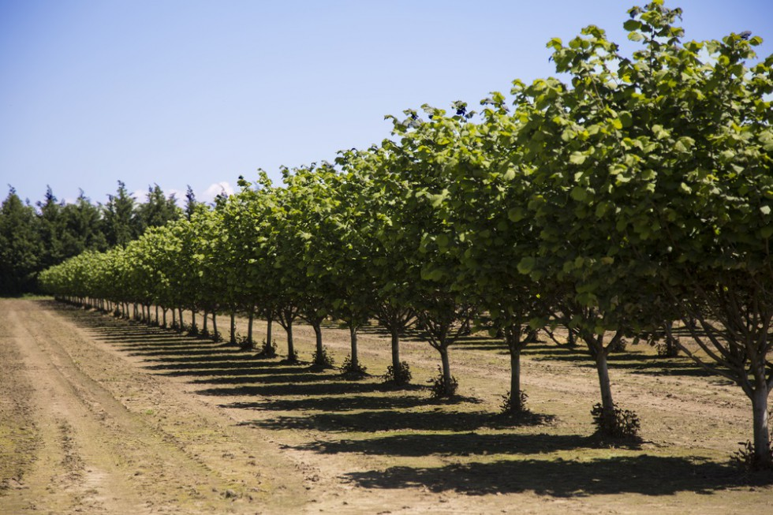
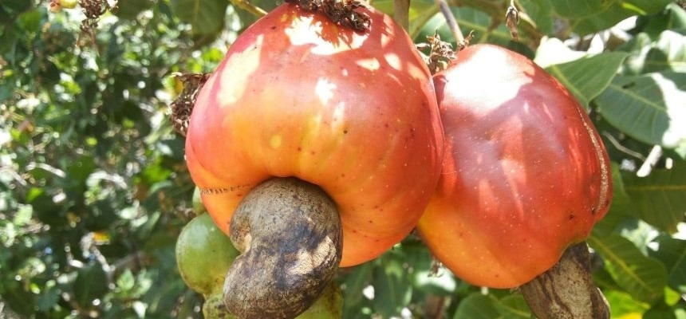

Czy warto uprawiać orzechy?
Uprawa orzechów może być opłacalna, ale warto wziąć pod uwagę rodzaj orzechów, warunki klimatyczne, inwestycje początkowe oraz czas potrzebny na uzyskanie plonów, a także lokalny popyt na rynku i zrównoważony rozwój. Jeśli masz odpowiednie warunki i plan, może to być wartościowy projekt.
Zbadanie lokalnego rynku jest równie ważne, aby upewnić się, że istnieje popyt na uprawiane orzechy. Możesz rozważyć sprzedaż bezpośrednią, na targach lokalnych lub współpracę z lokalnymi sklepami.
Wiecej o uprawie orzechów tutaj
Rodzaje orzechów
Każdy z tych rodzajów ma swoje unikalne wymagania i zalety, więc warto dostosować wybór do lokalnych warunków i preferencji rynkowych, oto kilka popularnych rodzajów orzechów, które można uprawiać dla zysku czy też dla samego siebie:
- Orzechy włoskie
- Orzechy laskowe
- Migdały
- Pistacje
- Orzechy Pekan
- Orzechy macadamia
- Orzechy arachidowe (fistaszki)
Istnieja również bardziej egzotyczne rodzaje orzechów które rosną w innych klimatach lub są rzadzej używane, tutaj kilka z nich:
- Orzechy nerkowca
- Orzechy brazylijskie
- Orzechy kokosowe
- Orzechy pinii (sosnowe)
- Orzechy włoskie czarne

Ciekawostki o Orzechach
Orzechy to fascynujące składniki, które mają wiele interesujących cech. Na przykład są znane jako "naturalne wzmacniacze pamięci", ponieważ regularne spożywanie orzechów włoskich może wspierać funkcje poznawcze. Warto dodać, że są bogate w białko, zdrowe tłuszcze oraz wiele witamin i minerałów, co czyni je prawdziwymi "superfoodami".

Orzechy nerkowca
Ciekawym aspektem jest, że orzechy nerkowca są przetwarzane przed spożyciem, ponieważ surowe orzechy zawierają substancje toksyczne, które muszą być usunięte podczas obróbki. W związku z tym są one najczęściej prażone lub gotowane przed sprzedażą.
Reszta ciekawostek o orzechcach tutaj